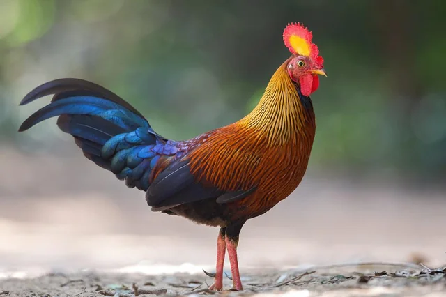
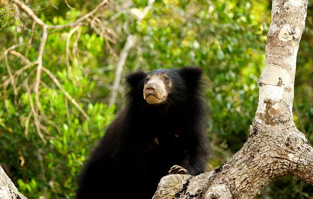

The Sri Lankan junglefowl (Gallus lafayettii), also known as the Ceylon junglefowl, is a colorful and distinctive bird native to Sri Lanka. It is the national bird of Sri Lanka and is closely related to the domestic chicken. The male junglefowl is characterized by its vibrant plumage, featuring a combination of red, orange, and yellow feathers, with a striking blue and red facial patch and long, glossy black tail feathers. In contrast, the female is more subdued in appearance, with brown and buff-colored feathers
The Sri Lankan sloth bear (Melursus ursinus inornatus)Sloth bears are characterized by their shaggy, long black fur, distinctive whitish V or Y-shaped markings on their chest, and a light-colored snout.
